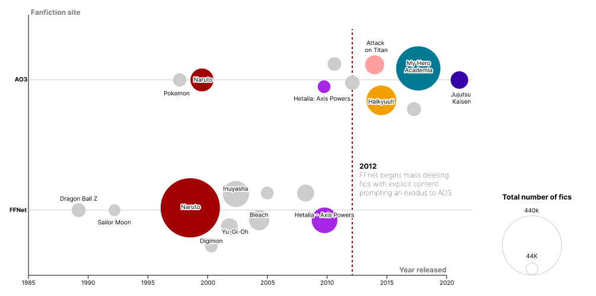

A Tale of Two (Web)cites: How bad content-moderation turns great fan communities into desolate wastelands.
It is an iron clad rule of the internet that 'if it exists, there is porn of it', such is written in Rule 34. Like it or not, the internet, and fandom in general thrives on adult content.

Is the citrus content rating system still a thing?
The second de-lemoning of fanfiction.net
A fan community can survive without adult content, but only if it never ventured into those murky waters from the start. Once a community dips its toes into smutty waters, stepping back out entails grave circumstances. It is a tale as old as (Internet) time, see OnlyFans in 2021, Tumblr fin 2018 and Fanfiction.net found in 2012.
My fandom experience was defined by not being able to close the fanfiction.net tab quickly enough and having to lie about what I was actually reading. That was circa 2010, when you pretended to not know what fanfiction was, let alone read it. With time, reading fanfiction became socially acceptable and authors have even had success turning their vampire BDSM smut into a multi-million dollar movie series.
I still remember the first time in 2012 when a school mate told me they also read fanfiction, and not only that, sent me a link of a work that they liked. But this time, the url didn't start with fanfiction.net as I'd known to expect but rather archiveofourown.org. What was this site that I'd never heard of and why did this person use it instead of my familiar fanfiction.net?
I compared the number of fics for this fandom (hint: it was Homestuck) on both ffnet and AO3 and noticed the amount of fics on ffnet was a lot smaller...strange. I didn't think much of it at the time and continued using both sites for a few years, depending on what I was in the mood for reading. Eventually, I started using ffnet less and less, especially for newer works and began migrating to AO3.
Coincidence, this was not. As it turned out 2012 marked a turning point for the the fanfiction landscape. This was the year when the powers that be at fanfiction.net mass deleted works with explicit sexual content, changing the balance of powers in my little corner of the internet.
Fanfiction.net creaking towards obscurity
Nowadays, ffnet is a shell of its former self. One only ventures into those barren ruins to reminisce in nostalgia and engage with fandoms whose heyday was over a decade ago. The cool kids who may or may-not remember a time when one read fanfiction in shame gather at AO3, where the sun still shines.
The desertification of fanfiction.net is evident for works airing at the cusp of the Great Purge. Airing between January to April in 2011, Puella Magi Madoka Magica is an anime-original (meaning not adapted from a source manga - somewhat of a rarity for animes) work from director Gen Urobuchi presenting a dark twist magical girl genre typified by works such as Sailor Moon or Card Captor Sakura.
The 3 theatrical releases of the Madoka Magica movies on the 06th, 12th October 2012 and in 2013 would keep the Madoka Magica fandom alive on ffnet 4 years after the purge until AO3 it in 2016.
Looking at the content ratings breakdown, it's clear that AO3 is the de-facto place to archive your lemons. There are no explicit-rated works on ffnet. Who knows how many works were lost to the Great Purge...
Methodology
Data scraped from AO3 and FFnet using BeautifulSoup and Selenium. Number of fics on ffnet rounded to nearest 1k from homepage, getting exact numbers would require scraping and summing each individual page for every fandom. Notebook analysis can be found on github.